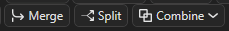
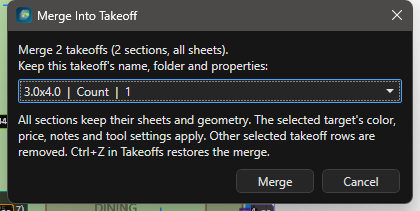
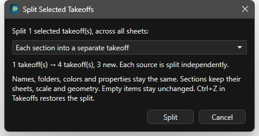
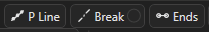
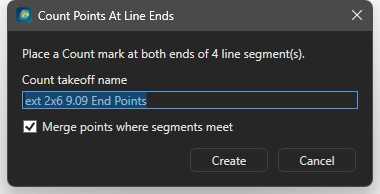

Merge, Split, Break, Ends, Combine, Similar: пошагово¶
Здесь каждая операция правки описана задачей: что подготовить, какие шаги, что увидеть в статусе. Общая картина (выделение, вершины, Undo, карта операций, рецепты в связке) на странице Правка замеров и привязки.

Merge, Split и список Combine. Break и Ends стоят левее, рядом с P Line.Шпаргалка¶
| Кнопка | Клавиша | Что делает | С чем работает |
|---|---|---|---|
Merge |
Ctrl+M | объединяет целые позиции (выбор в дереве) или переносит выбранные сегменты в другую позицию (выбор на листе) | Takeoffs, лист |
Split |
Ctrl+Shift+M | делит позицию по секциям или по листам (дерево); отделяет сегменты или метки в новую позицию (лист) | Takeoffs, лист |
Break |
Ctrl+Shift+B | каждая ломаная Line распадается на односегментные замеры | Line |
Break с точкой H/V |
Ctrl+Shift+V | сегменты уходят в <имя> - Horizontal и <имя> - Vertical |
Line |
Ends |
нет | Count-метки на обоих концах каждого сегмента Line | Line |
P Line |
нет | Count-метки вдоль Line с заданным шагом | Line |
Cut |
X, F9 бокс | вырез в Area, стирание куска Line | Area, Line |
Combine |
нет | Union, Subtract, Intersect, Remove Overlap, Divide для двух и больше Area | Area |
Similar |
нет | поиск одинаковых символов на листе и на других листах | Count |
Transform |
нет | Flip H, Flip V, поворот, масштаб выбранного | все |
Repeat Line, Repeat Beam |
нет | серия отрезков или балок без диалога на каждую | Line, Beam |
Все команды есть в палитре Ctrl+Shift+P: Break Lines Into Segments, Break Lines Into Horizontal / Vertical, Count Points At Line Ends, Combine Areas: Union и так далее. Клавиши без назначения задаются в редакторе клавиш. Merge, Split, Break, Ends, P Line, Combine требуют модуль Advanced Takeoff Tools (включён по умолчанию, Settings > Modules).
Два режима Merge и Split¶
- Строки позиций выделены в дереве Takeoffs (Ctrl или Shift по строкам): работают целые позиции со всеми секциями на всех листах. Так собирают одинаковые позиции с разных этажей и делят позицию перед Excel.
- Замеры выбраны на листе инструментом
Select(или выбрана секция под позицией в дереве): работают сегменты и метки. Так переносят ошибочный кусок в другую позицию или отделяют его в новую.
Приоритет у дерева: если там выделены строки позиций, кнопка и клавиша работают с целыми позициями, даже если на листе что-то осталось выбранным. Клик по замеру на листе возвращает режим сегментов.
Отмена для дерева: Ctrl+Z с фокусом в панели Takeoffs или ПКМ Undo Takeoff Merge / Split. Отмена на листе: Ctrl+Z во вьюпорте.
Как слить целые позиции¶
Зачем: одна позиция вместо нескольких одинаковых (стены 2-го и 3-го этажей с одним именем). Нужно: две и больше позиции одного типа (Count с Count, Line с Line, Area с Area, J Area с J Area).

Merge Into Takeoff: выбрать, какая позиция остаётся; остальные переезжают в неё секциями.- В Takeoffs выделите позиции: клик по первой, Ctrl или Shift + клик по остальным.
- Нажмите
Merge, Ctrl+M или ПКМ Merge Selected Takeoffs.... - В списке выберите позицию, которая останется: её имя, папка, цвет, цена и свойства сохраняются.
- Нажмите Merge.
Результат: статус Merged 3 takeoffs into ext 2x6 9.09 (12 sections). Ctrl+Z in Takeoffs to undo. Секции со всех листов переехали в выбранную позицию, остальные строки исчезли. Геометрия не склеивается: линии остаются отдельными сегментами, метки отдельными метками.
Merge Into Takeoff переносят его в ext 2x6 9.09.Советы
- Удалённые при объединении позиции хранятся в
AI_Context/takeoff-merge-trashвнутри проекта; Ctrl+Z в дереве возвращает их, пока сессия открыта. - Если окно
Merge Into Takeoffпоказывает одну строку, программа сольёт без вопроса.
Как перенести сегменты в другую позицию¶
Зачем: кусок стены нарисован не в той позиции. Нужно: нужная позиция уже существует.
Select(E), кликните по сегменту, Ctrl + клик по остальным ошибочным.- Нажмите Ctrl+M.
- В диалоге Merge Into Takeoff выберите позицию назначения, Merge.
Результат: статус Merged 2 segment(s) into ext 2x6 9.09, сегменты перекрасились в цвет позиции. Типы не смешиваются: Merge/Split needs one measurement type at a time.
Как разделить позицию по секциям или листам¶
Зачем: из одной позиции на трёх листах получить три позиции под строки DFL. Нужно: позиция с несколькими секциями.

Each section into a separate takeoff и Separate takeoffs by sheet; превью показывает, сколько позиций получится.- Выделите позицию (или несколько) в Takeoffs.
- Нажмите
Split, Ctrl+Shift+M или ПКМ Split Selected Takeoffs.... - Выберите режим:
Each section into a separate takeoff(по умолчанию) илиSeparate takeoffs by sheet. - Проверьте превью
1 takeoff(s) ... 3 takeoff(s), 2 newи нажмите Split.
Результат: статус Split 1 takeoff(s); created 2 new takeoff(s). Ctrl+Z in Takeoffs to undo. Первая группа осталась в исходной позиции, остальные стали соседними позициями с тем же именем, папкой и свойствами, но новым цветом. Секции сохраняют лист, масштаб и геометрию; пустые позиции не меняются.
Separate takeoffs by sheet: две позиции, по одной на лист.Раскладка позиций по листам для Excel подробно: Split по листам.
Как отделить сегменты или метки в новую позицию¶
Зачем: часть замеров должна стать отдельной позицией с другим именем. Нужно: замеры выбраны на листе.
Select, выделите сегменты. Для меток Count: Alt + клик или рамка по нужным меткам.- Нажмите Ctrl+Shift+M.
- В диалоге Split Selected Measurements (для меток Split Selected Count Marks) введите имя новой позиции, OK.
Результат: статус Split 4 segment(s) into new takeoff ... или Split 3 Count marks into new takeoff .... Новая позиция лежит рядом с исходной и получает свой цвет.
Как разбить ломаную на отрезки¶
Зачем: двигать, перекрашивать или ставить точки по каждому отрезку отдельно. Нужно: Line из двух и больше сегментов.

Break с маленькой точкой H/V (закрашена = режим включён) и Ends справа.- Выделите линии на листе или Line-позицию в Takeoffs (можно несколько).
- Нажмите
Breakили Ctrl+Shift+B (ПКМ по линии: Break Line Into Segments). - При 200 и больше сегментах подтвердите вопрос
Break Lines Into Segments.
Результат: статус Broke 2 line(s) into 9 separate segments. Ctrl+Z restores them. Сумма длин не изменилась, число секций под позицией выросло. Если все линии уже односегментные: Nothing to break.
Как разнести отрезки по горизонтали и вертикали¶
Зачем: раздельный счёт горизонтальных и вертикальных элементов (bracing, trims). Нужно: Line нарисована, можно одним сегментом.
- Выделите линии или позицию.
- Нажмите Ctrl+Shift+V. Или закрасьте точку H/V на кнопке
Break(статусBreak H/V is on) и нажмитеBreak.
Результат: статус Broke 1 line(s) into 7 segments: 4 to bft - Horizontal, 3 to bft - Vertical. Ctrl+Z puts the lines back. Рядом с исходной позицией появились <имя> - Horizontal (цвет исходной) и <имя> - Vertical (контрастный цвет). Исходная позиция остаётся, даже пустая, чтобы Ctrl+Z вернул ломаные.
Horizontal и Vertical, затем Ends ставит метки на концах линий.Советы
- Повторный запуск доливает сегменты в ту же пару
- Horizontal/- Vertical, новая пара не создаётся. - В дереве Takeoffs Ctrl+Shift+V это Break H/V, а Ctrl+V остаётся Paste.
- Диагональные отрезки относятся к той оси, к которой ближе.
Как поставить точки на концах линий¶
Зачем: посты по концам балок, holdowns по концам shear walls. Нужно: Line выбраны на листе или Line-позиция в дереве.

Count Points At Line Ends: имя нового Count, галка Merge points where segments meet, кнопка Create.- Выделите линии.
- Нажмите
Ends(ПКМ по линии: Count Points At Line Ends...). - Задайте имя (по умолчанию
<позиция> End Points), оставьте галкуMerge points where segments meet: одна метка в общем углу вместо двух. - Нажмите Create.
Результат: статус End points created: 14 Count mark(s) in beam End Points. Merged 3 shared corner(s). Новый Count лежит в папке исходной позиции и становится активным; инструмент переключён на Count, можно добавить метки вручную. Каждая исходная позиция даёт свой Count.
Как поставить точки вдоль линии с шагом¶
Зачем: стойки забора, hangers, anchors по шагу. Нужно: Line выбрана.
- Выделите линию или несколько.
- Нажмите
P Line(ПКМ по линии: Create Count Points Along Line...). - В диалоге Create Count Points Along Line(s) введите
Count takeoff name,Spacing, inches(по умолчанию шаг линии или 16), оставьте галкуInclude line end point. - Нажмите Create.
Результат: отдельный Count с метками вдоль линии. Линия остаётся и даёт погонаж. No Count points were created означает, что шаг больше длины линии.
P Line, имя posts 2x4, шаг 48: метки встают вдоль линий.Как вырезать проём из площади и стереть кусок линии¶
Зачем: шахты, лестницы и проёмы не должны входить в площадь; линия не должна идти через ворота. Нужно: Area или Line на листе.
- Нажмите
Cut(X). Для прямоугольника включитеBox(F9). - Кликните внутри площади: она становится целью (статус
Cut: click inside the Area you want to cut, если промахнулись). - Обведите вырез точками и закончите C или двойным кликом; в режиме
Boxкликните второй угол. - Для линии:
Select, выберите линию, затемCutи обведите кусок, который стираете.
Результат: статус Cut (polygon): 1 area changed ... или с числом удалённых и добавленных линий. Вырез (cutout) потом можно выбрать кликом внутри него, подвинуть, скопировать с площадью или удалить Del (площадь остаётся).
Cut без цели
Если первый клик был вне любой площади и ничего не выбрано, Cut режет все линии листа, которых касается контур. Выделяйте цель до резки.
Как объединить, вычесть или развести площади¶
Зачем: площади внахлёст, вычет балкона из этажа, разбиение на части. Нужно: две и больше Area на одном листе; первая выбранная главная.
Select, кликните главную площадь, Ctrl + клик по остальным.- Откройте список
Combineи выберите операцию:
| Операция | Результат |
|---|---|
Union |
одна площадь из всех выбранных |
Subtract |
из первой выбранной вычесть остальные; остальные не меняются |
Intersect |
остаётся только общее пересечение |
Remove Overlap |
срезать перекрытия, первая выбранная остаётся целой; ничего не считается дважды |
Divide |
разбить на непересекающиеся части плюс отдельная площадь перекрытия |
Результат: статус Combine union: 2 area(s) merged into 1 и подобные. Combine: the selected areas do not overlap значит, что пересечения нет. Для вырезов внутри одной Area проще Cut.
1st, Ctrl и щелчок по балкону, Combine > Subtract: площадь этажа уменьшилась на нахлёст.Как найти такие же символы¶
Зачем: один символ (holdown, post, hanger) посчитать по всему листу или проекту за один проход. Нужно: лист открыт; активный Count или готовность создать новый.
- Нажмите
Similarи обведите рамкой один символ. - Выберите порог:
Strict,Default,Loose; при необходимости галкиMatch rotated copies (90° / 180° / 270°)иMatch mirrored copies. - Для всего проекта поставьте
Search all sheets in this job: совпадения, проверенные по растру, добавятся сами; кандидаты только по тексту лишь показываются. Не больше 80 других листов за поиск. - Проверьте метки: синие добавляются сразу, оранжевые слабые на проверку, серые галки уже посчитаны.
Include candidatesберёт и слабые,Strong onlyтолько надёжные. - Нажмите
Add N to <имя>.
Результат: метки в активном Count или в новом Similar Count. Галка Ask AI to identify the symbol работает онлайн и только подсказывает имя (нужны модуль AI и ключ). Подробно про поиск по листам: Similar по всем листам.
Similar, рамка вокруг окна, галки Match rotated copies и Search all sheets, Add. Ожидание поиска по листам вырезано.Как отразить, повернуть и масштабировать выбранное¶
Зачем: зеркальный юнит, повёрнутый корпус, замеры с листа другого масштаба. Нужно: замеры или разметка выбраны на листе.
Select, выделите замеры (можно вместе с вырезами и разметкой).- Нажмите
Flip HилиFlip Vв строке 2 полосы: зеркало вокруг центра выделения. - Поворот: перетащите оранжевую ручку поворота на рамке выделения (Shift даёт шаг 15°) или двигайте ползунок
Rot; кнопка со стрелкой рядом возвращает ползунок в ноль для следующего относительного поворота. - Размер: угловые оранжевые ручки масштабируют от центра, боковые тянут одну сторону (Shift сохраняет пропорции); или ползунок
Scaleи поле1x(ввести1.25xили125%, Enter).
Результат: статус Mirrored selection horizontal, Rotated selection 90 deg, Scaled selection 1.25x. Движение ползунка отменяется одним Ctrl+Z. Направление joists поворачивается вместе с J Area. Клавиши Mirror selected objects horizontally / vertically по умолчанию не назначены.
Flip H, Flip V, ползунок Rot; три Ctrl+Z возвращают всё назад.Как повторять отрезки и балки¶
Зачем: серия коротких отрезков или балок без выбора инструмента каждый раз. Нужно: лист с масштабом.
- Нажмите кнопку со стрелкой
Repeat Lineсправа отLine(илиRepeat Beamсправа отBeam). - Для Line задайте имя новой позиции один раз. Каждые два клика создают отдельный двухточечный отрезок в ней.
- Для Beam каждая пара кликов меряет длину, спрашивает имя и ставит метку, затем ждёт следующую балку.
- Нажмите Esc или кнопку повтора ещё раз, чтобы остановиться.
Результат: статус Repeat drawing stopped, серия замеров в дереве.
Repeat Line, имя blk 2x10, отрезки парами щелчков без переключения инструмента, Esc заканчивает.Ловушки¶
Mergeне склеивает геометрию: две стены встык остаются двумя сегментами с общей суммой.Splitна листе иSplitв дереве это разные команды; смотрите, где выделение.Break H/Vзаводит пару позиций и при следующем запуске доливает в неё.Similarнаходит похожие картинки, а не одинаковое назначение: окно и дверь одной формы могут попасть в один счёт. Проверяйте оранжевые метки.- Операции из дерева откатываются Ctrl+Z только с фокусом в панели Takeoffs; операции на листе только с фокусом во вьюпорте.
Cutбез выбранной цели режет все линии, которых касается контур.